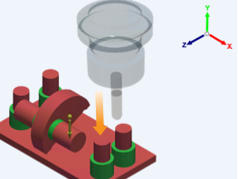

Oriente l'outil dans la direction parallèle à l'axe Y du trièdre et pointe vers l'extrémité négative de l'axe Y.
Les boutons de direction d'outil vous permettent de définir les orientations d'outil pour une opération de fraisage. La direction de l'outil est orientée selon le système de coordonnées global.
 |
Vous pouvez sélectionner plusieurs directions d'outil pour une configuration de fraisage pour permettre un usinage multi-côtés.